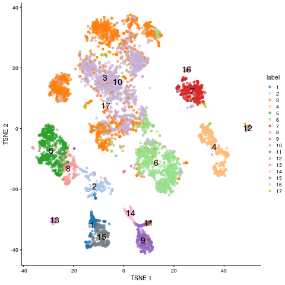
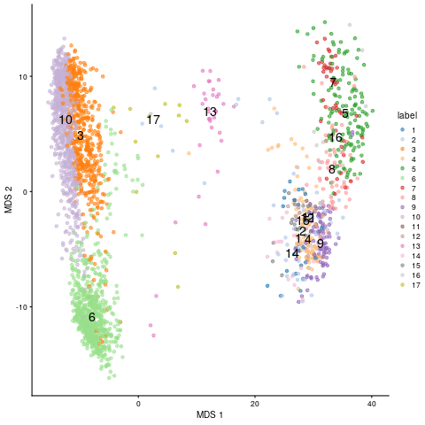
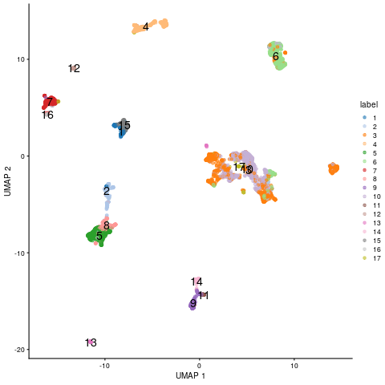
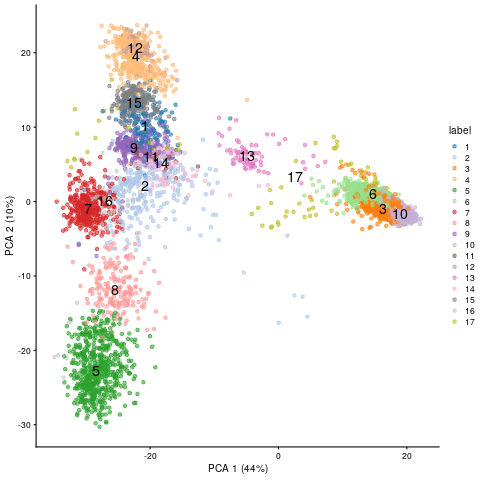
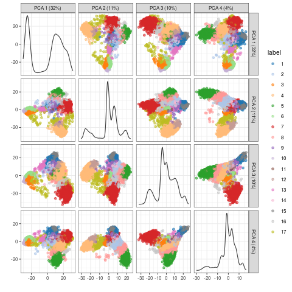

scRNA-Seq Embedding Methods
8 minute read
Introduction
This tutorial introduces the usage of several software implementations of
embedding algorithms for high-dimensional gene expression data (Duò, Robinson, and Soneson 2018) that are often
used for single cell RNA-Seq (scRNA-Seq) data. Many of them are available as R packages on CRAN,
Bioconductor and/or GitHub. Examples include PCA, MDS,
SC3
(Kiselev et al. 2017),
isomap,
t-SNE
(Donaldson and Donaldson 2010), FIt-SNE
(Linderman et al. 2019), and
UMAP
(McInnes, Healy, and Melville 2018). In addition, some packages such as Bioconductor’s
scater
package provide in a single environment access to a wide range of embedding methods that can be
conveniently and uniformly applied to Bioconductor’s S4 object class called
SingleCellExperiment
for handling scRNA-Seq data (Senabouth et al. 2019; Amezquita et al. 2020). The
performance of the different embedding methods for scRNA-Seq data has been
intensively tested by several studies, including Sun et al. (2019; 2020).
For illustration purposes, the following example code first applies four widely
used embedding methods to a bulk RNA-Seq data set (Howard et al. 2013), and then to a much more
complex scRNA-Seq data set (Aztekin et al. 2019) obtained from the
scRNAseq
package.
Bulk RNA-Seq data
Generate SummarizedExperiment and SingleCellExperiment
The following loads the bulk RNA-Seq data from Howard et al. (2013)
into SummarizedExperiment and SingleCellExperiment objects. This is done
by first creating a SummarizedExperiment object and then coercing it to a
SingleCellExperiment object, as well as intializing the SingleCellExperiment
directly.
Create SummarizedExperiment and coerce to SingleCellExperiment
The required targetsPE.txt and countDFeByg.xls files can be downloaded
from here.
library(SummarizedExperiment); library(SingleCellExperiment)
targetspath <- "results/targetsPE.txt"
countpath <- "results/countDFeByg.xls"
targets <- read.delim(targetspath, comment.char = "#")
rownames(targets) <- targets$SampleName
countDF <- read.delim(countpath, row.names=1, check.names=FALSE)
(se <- SummarizedExperiment(assays=list(counts=countDF), colData=targets))
## class: SummarizedExperiment
## dim: 29699 18
## metadata(0):
## assays(1): counts
## rownames(29699): AT1G01010 AT1G01020 ... ATMG01400 ATMG01410
## rowData names(0):
## colnames(18): M1A M1B ... V12A V12B
## colData names(7): FileName1 FileName2 ... Experiment Date
(sce <- as(se, "SingleCellExperiment"))
## class: SingleCellExperiment
## dim: 29699 18
## metadata(0):
## assays(1): counts
## rownames(29699): AT1G01010 AT1G01020 ... ATMG01400 ATMG01410
## rowData names(0):
## colnames(18): M1A M1B ... V12A V12B
## colData names(7): FileName1 FileName2 ... Experiment Date
## reducedDimNames(0):
## mainExpName: NULL
## altExpNames(0):
Create SingleCellExperiment directly
sce2 <- SingleCellExperiment(assays=list(counts=countDF), colData=targets)
Prepare data for plotting with embedding methods
The data are preprocessed (_e.g._normalized) to plot them with the run
embedding functions from the
scran
and scater packages.
library(scran); library(scater)
sce <- logNormCounts(sce)
colLabels(sce) <- factor(colData(sce)$Factor) # This uses replicate info from above targets file as pseudo-clusters
Embed with different methods and plot results
Note, the embedding results are sequentially appended to the SingleCellExperiment object, meaning one can use the plot function whenever necessary.
(a) tSNE
sce <- runTSNE(sce)
reducedDimNames(sce)
## [1] "TSNE"
plotTSNE(sce, colour_by="label", text_by="label")
(b) MDS
sce <- runMDS(sce)
reducedDimNames(sce)
## [1] "TSNE" "MDS"
plotMDS(sce, colour_by="label", text_by="label")
(c) UMAP
sce <- runUMAP(sce)
reducedDimNames(sce)
## [1] "TSNE" "MDS" "UMAP"
plotUMAP(sce, colour_by="label", text_by="label")
(d) PCA
PCA plot for first two components.
sce <- runPCA(sce) # gives a warning due to small size of data set but it still works
reducedDimNames(sce)
## [1] "TSNE" "MDS" "UMAP" "PCA"
plotPCA(sce, colour_by="label", text_by="label")
Multiple components can be plotted in a series of pairwise plots. When more than two components are plotted, the diagonal boxes in the scatter plot matrix show the density for each component.
sce <- runPCA(sce, ncomponents=20) # gives a warning due to small size of data set but it still works
reducedDimNames(sce)
## [1] "TSNE" "MDS" "UMAP" "PCA"
plotPCA(sce, colour_by="label", text_by="label", ncomponents = 4)
scRNA-Seq data
Load scRNA-Seq data
The scRNAseq package is used to load the scRNA-Seq data set from Xenopus tail
directly into a SingleCellExperiment object (Aztekin et al. 2019).
library(scRNAseq)
sce <- AztekinTailData()
Prepare data for plotting with embedding methods
Similarly as above, the data are preprocessed (_e.g._normalized) to plot them with the run
embedding functions from the
scran
package. In addition, the data is clustered with the quickCluster function.
library(scran); library(scater)
sce <- logNormCounts(sce)
clusters <- quickCluster(sce)
# sce <- computeSumFactors(sce, clusters=clusters)
colLabels(sce) <- factor(clusters)
table(colLabels(sce))
To acclerate the testing performance of the following code, the size of the expression matrix
is reduced to cell types with values \(\ge10^4\).
filter <- colSums(assays(sce)$counts) >= 10^4
sce <- sce[, filter]
To color items in the downstream dot plots by cell type instead of the above clustering result,
one can use the cell type info under colData(). Note, this step is not evaluated here.
# colLabels(sce) <- colData(sce)$cluster
Embed with different methods and plot results
As under the bulk RNA-Seq section, the embedding results are sequentially
appended to the SingleCellExperiment object, meaning one can use the plot
function whenever necessary.
(a) tSNE
sce <- runTSNE(sce)
reducedDimNames(sce)
plotTSNE(sce, colour_by="label", text_by="label")

tSNE embedding of scRNA-Seq data
(b) MDS
sce <- runMDS(sce)
reducedDimNames(sce)
plotMDS(sce, colour_by="label", text_by="label")

MDS embedding of scRNA-Seq data
(c) UMAP
sce <- runUMAP(sce) # Note, the UMAP embedding is already stored in downloaded SingleCellExperiment object by authers. So one can just use this one or recompute it.
reducedDimNames(sce)
plotUMAP(sce, colour_by="label", text_by="label")

UMAP embedding of scRNA-Seq data
(d) PCA
PCA result plotted for first two components.
sce <- runPCA(sce)
reducedDimNames(sce)
plotPCA(sce, colour_by="label", text_by="label")

PCA embedding of scRNA-Seq data
Multiple components can be plotted in a series of pairwise plots. When more than two components are plotted, the diagonal boxes in the scatter plot matrix show the density for each component.
sce <- runPCA(sce, ncomponents=20)
reducedDimNames(sce)
plotPCA(sce, colour_by="label", text_by="label", ncomponents = 4)

PCA embedding of scRNA-Seq data for multiple components
Version Information
sessionInfo()
## R version 4.1.0 (2021-05-18)
## Platform: x86_64-pc-linux-gnu (64-bit)
## Running under: Debian GNU/Linux 10 (buster)
##
## Matrix products: default
## BLAS: /usr/lib/x86_64-linux-gnu/blas/libblas.so.3.8.0
## LAPACK: /usr/lib/x86_64-linux-gnu/lapack/liblapack.so.3.8.0
##
## locale:
## [1] LC_CTYPE=en_US.UTF-8 LC_NUMERIC=C
## [3] LC_TIME=en_US.UTF-8 LC_COLLATE=en_US.UTF-8
## [5] LC_MONETARY=en_US.UTF-8 LC_MESSAGES=en_US.UTF-8
## [7] LC_PAPER=en_US.UTF-8 LC_NAME=C
## [9] LC_ADDRESS=C LC_TELEPHONE=C
## [11] LC_MEASUREMENT=en_US.UTF-8 LC_IDENTIFICATION=C
##
## attached base packages:
## [1] parallel stats4 stats graphics grDevices utils datasets
## [8] methods base
##
## other attached packages:
## [1] scater_1.20.0 ggplot2_3.3.3
## [3] scran_1.20.0 scuttle_1.2.0
## [5] SingleCellExperiment_1.14.0 SummarizedExperiment_1.22.0
## [7] Biobase_2.52.0 GenomicRanges_1.44.0
## [9] GenomeInfoDb_1.28.0 IRanges_2.26.0
## [11] S4Vectors_0.30.0 BiocGenerics_0.38.0
## [13] MatrixGenerics_1.4.0 matrixStats_0.58.0
##
## loaded via a namespace (and not attached):
## [1] bitops_1.0-7 tools_4.1.0
## [3] bslib_0.2.5.1 utf8_1.2.1
## [5] R6_2.5.0 irlba_2.3.3
## [7] vipor_0.4.5 uwot_0.1.10
## [9] DBI_1.1.1 colorspace_2.0-1
## [11] withr_2.4.2 gridExtra_2.3
## [13] tidyselect_1.1.1 compiler_4.1.0
## [15] BiocNeighbors_1.10.0 DelayedArray_0.18.0
## [17] labeling_0.4.2 bookdown_0.22
## [19] sass_0.4.0 scales_1.1.1
## [21] stringr_1.4.0 digest_0.6.27
## [23] rmarkdown_2.8 XVector_0.32.0
## [25] pkgconfig_2.0.3 htmltools_0.5.1.1
## [27] sparseMatrixStats_1.4.0 highr_0.9
## [29] limma_3.48.0 rlang_0.4.11
## [31] FNN_1.1.3 DelayedMatrixStats_1.14.0
## [33] farver_2.1.0 jquerylib_0.1.4
## [35] generics_0.1.0 jsonlite_1.7.2
## [37] BiocParallel_1.26.0 dplyr_1.0.6
## [39] RCurl_1.98-1.3 magrittr_2.0.1
## [41] BiocSingular_1.8.0 GenomeInfoDbData_1.2.6
## [43] Matrix_1.3-3 Rcpp_1.0.6
## [45] ggbeeswarm_0.6.0 munsell_0.5.0
## [47] fansi_0.4.2 viridis_0.6.1
## [49] lifecycle_1.0.0 stringi_1.6.2
## [51] yaml_2.2.1 edgeR_3.34.0
## [53] zlibbioc_1.38.0 Rtsne_0.15
## [55] grid_4.1.0 dqrng_0.3.0
## [57] crayon_1.4.1 lattice_0.20-44
## [59] cowplot_1.1.1 beachmat_2.8.0
## [61] locfit_1.5-9.4 metapod_1.0.0
## [63] knitr_1.33 pillar_1.6.1
## [65] igraph_1.2.6 ScaledMatrix_1.0.0
## [67] glue_1.4.2 evaluate_0.14
## [69] blogdown_1.3 vctrs_0.3.8
## [71] gtable_0.3.0 purrr_0.3.4
## [73] assertthat_0.2.1 xfun_0.23
## [75] rsvd_1.0.5 RSpectra_0.16-0
## [77] viridisLite_0.4.0 tibble_3.1.2
## [79] beeswarm_0.3.1 cluster_2.1.2
## [81] bluster_1.2.0 statmod_1.4.36
## [83] ellipsis_0.3.2
References
Amezquita, Robert A, Aaron T L Lun, Etienne Becht, Vince J Carey, Lindsay N Carpp, Ludwig Geistlinger, Federico Marini, et al. 2020. “Orchestrating single-cell analysis with Bioconductor.” Nat. Methods 17 (2): 137–45. https://doi.org/10.1038/s41592-019-0654-x.
Aztekin, C, T W Hiscock, J C Marioni, J B Gurdon, B D Simons, and J Jullien. 2019. “Identification of a regeneration-organizing cell in the Xenopus tail.” Science 364 (6441): 653–58. https://doi.org/10.1126/science.aav9996.
Donaldson, Justin, and Maintainer Justin Donaldson. 2010. “Package ‘Tsne’.” CRAN Repository.
Duò, Angelo, Mark D Robinson, and Charlotte Soneson. 2018. “A systematic performance evaluation of clustering methods for single-cell RNA-seq data.” F1000Res. 7 (July): 1141. https://doi.org/10.12688/f1000research.15666.3.
Howard, Brian E, Qiwen Hu, Ahmet Can Babaoglu, Manan Chandra, Monica Borghi, Xiaoping Tan, Luyan He, et al. 2013. “High-Throughput RNA Sequencing of Pseudomonas-Infected Arabidopsis Reveals Hidden Transcriptome Complexity and Novel Splice Variants.” PLoS One 8 (10): e74183. https://doi.org/10.1371/journal.pone.0074183.
Kiselev, Vladimir Yu, Kristina Kirschner, Michael T Schaub, Tallulah Andrews, Andrew Yiu, Tamir Chandra, Kedar N Natarajan, et al. 2017. “SC3: consensus clustering of single-cell RNA-seq data.” Nat. Methods 14 (5): 483–86. https://doi.org/10.1038/nmeth.4236.
Linderman, George C, Manas Rachh, Jeremy G Hoskins, Stefan Steinerberger, and Yuval Kluger. 2019. “Fast interpolation-based t-SNE for improved visualization of single-cell RNA-seq data.” Nat. Methods 16 (3): 243–45. https://doi.org/10.1038/s41592-018-0308-4.
McInnes, Leland, John Healy, and James Melville. 2018. “UMAP: Uniform Manifold Approximation and Projection for Dimension Reduction,” February. http://arxiv.org/abs/1802.03426.
Senabouth, Anne, Samuel W Lukowski, Jose Alquicira Hernandez, Stacey B Andersen, Xin Mei, Quan H Nguyen, and Joseph E Powell. 2019. “ascend: R package for analysis of single-cell RNA-seq data.” Gigascience 8 (8). https://doi.org/10.1093/gigascience/giz087.
Sun, Shiquan, Jiaqiang Zhu, Ying Ma, and Xiang Zhou. 2019. “Accuracy, robustness and scalability of dimensionality reduction methods for single-cell RNA-seq analysis.” Genome Biol. 20 (1): 269. https://doi.org/10.1186/s13059-019-1898-6.
Sun, Shiquan, Jiaqiang Zhu, and Xiang Zhou. 2020. “Statistical analysis of spatial expression patterns for spatially resolved transcriptomic studies.” Nat. Methods, January. https://doi.org/10.1038/s41592-019-0701-7.